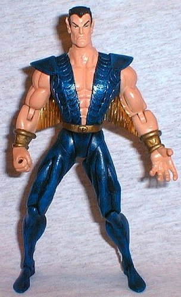

|  | Namor was made from a DC Heroes superman body, Zorro character head, Despero ears, and Adam Warlock hands and bracelets. I "straightened" the torso and thighs to make the figure stand a little more upright and proud. The shoulder pads came from Wolverine, the chest scales are sequins, ankle wings from blister plastic, and the underarm wings are gold crepe paper. I thought it would be interesting to use the retro style suit that made a comeback in the Heroes Reborn FF storyline. My bubble was burst when I saw the new ToyBiz version had the same costume. Oh well. It took me forever to find what I needed for the underarm wings, and when I did, I found that it still didn't work too well, because it severely restricts the arm movement. I'm still trying to find a better solution. |